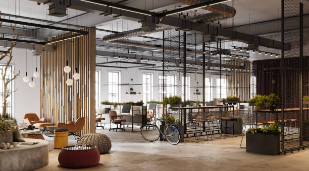

A comparison of different private coworking spaces in the Dupont Circle area
Posted by on 2024-06-05
When looking for a private coworking space in the Dupont Circle area, there are several options to choose from. Each space offers unique amenities and benefits that cater to different needs and preferences. In this essay, we will compare and contrast three popular private coworking spaces in the area: WeWork Dupont Circle, Cove Workspace, and MakeOffices.
WeWork Dupont Circle is known for its sleek design and modern amenities. The space features open floor plans with plenty of natural light, making it a great environment for productivity. Members have access to high-speed internet, printing services, meeting rooms, and complimentary coffee and tea. Additionally, WeWork hosts networking events and workshops for members to connect with other professionals in the community.
Cove Workspace offers a more intimate setting for those seeking a quiet and focused work environment. The space is designed with privacy in mind, featuring soundproof phone booths and dedicated desks for members. Cove also provides unlimited coffee and snacks for members to enjoy throughout the day. One unique feature of Cove is their partnership with local restaurants, allowing members to order lunch delivery directly to their workspace.
MakeOffices stands out for its flexible membership options and affordable pricing. Members can choose between hot desks or dedicated desks based on their needs. The space also includes amenities such as high-speed internet, conference rooms, event spaces, and complimentary refreshments. MakeOffices prides itself on fostering a collaborative community where members can network and collaborate on projects.
In conclusion, each private coworking space in the Dupont Circle area offers something different for professionals seeking a productive work environment. Whether you prefer a modern design like WeWork Dupont Circle, a quiet setting like Cove Workspace, or flexible membership options like MakeOffices, there is something for everyone in this vibrant neighborhood. Ultimately, the best choice will depend on your specific needs and preferences as you look for the perfect workspace to boost your productivity and creativity.